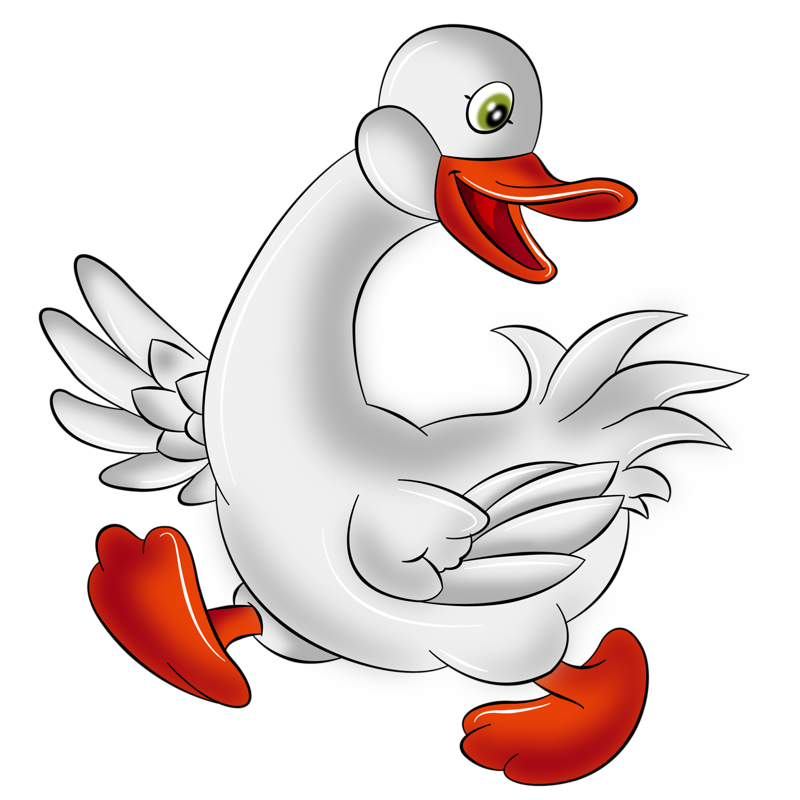

Сайт «Гусенок»
{##} {##} {##} {#
#}
小鹅网是服务俄语爱好者的学习社区，分享优质学习资源。主要分为四大板块:新闻资讯、俄罗斯名人介绍、
俄罗斯名画赏析、俄罗斯电影交流。网站互动性强，用户可以收藏喜欢的文章，
还可将自己的文章分享至相应板块。
Сайт «Гусенок»- это сообщество для любителей русского языка,
которое делится качественными учебными ресурсами. Он разделен
на четыре раздела: новости и русские знаменитости, русские
картины и русские фильмы.Сайт является интерактивным, пользователи
могут добавлять понравившиеся статьи в избранное и делиться
собственными статьями в соответствующих разделах.